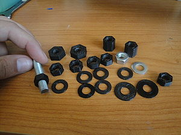
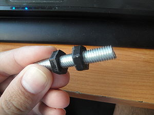
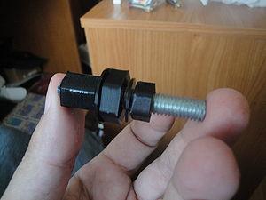
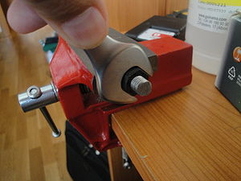
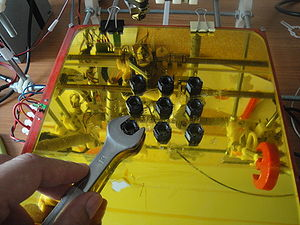
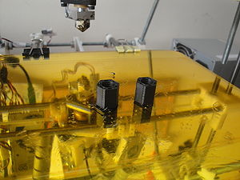
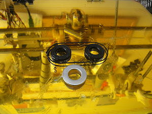

| Tuercas y arandelas M8 en Thingiverse |
|---|

(click para ampliar)
Contenido
[ocultar]Introducción
Tuerca M8 paramétrica e imprimible. ¡Es totalmente funcional! El diseño original es de Trevor Moseley, que ha hecho la ISO Metric thread library para openscad. Me he basado en su diseño para hacer tuercas con medidas estándares de altura y diámetro exterior, que se puedan apretar usando llaves del 13. También he aprovechado para hacerlas paramétricas y que el usuario pueda establecer estos parámetros, para hacer tuercas M8 con medidas no estándares. He incluido también arandelas, así está todo en el mismo pack :-)
Instrucciones
- Imprimir las tuercas
- Enroscarlas en una varilla roscada M8. Al principio están un poco duras, pero luego van muy bien
Descarga
| Hex_nut_M8.stl | Tuerca M8, medidas estándares |
| Hex_nut_M8_higher.stl | Tuerca M8, altura doble |
| Hex_nut_M8_wider.stl | Tuerca M8. Diámetro exterior de 20mm |
| washer_M8.stl | Arandela M8 con medidas estándares |
| washer_M8_extra_wide.stl | Arandela M8, de 20mm de diámetro exterior |
| M8_hex_nut_washer.zip | Fuentes, para OpenScad |
Fotos
| Álbum de fotos completo |
|---|
|  Tuercas M8 estándares, atornilladas en una varilla roscada M8 (click para ampliar) |
 Tuercas M8 de diferentes medidas, y arandelas, enroscadas en una varilla M8 (click para ampliar) |
|  Apretando una tuerca imprimible con una llave del 13 (click para ampliar) |
 Tuercas recién impresas. Se despegan muy bien con la llave 13 :-) (click para ampliar) |
|  Tuercas M8 de doble altura, recién impresas (click para ampliar) |
 Arandelas M8 estándares, recién impresas (click para ampliar) |
Vídeos
|
|


Repositorio
- Repositorio SVN: http://svn.iearobotics.com/3D_objects/M8_hex_nut_washer/
Autor
Créditos
- Todo el mérito es de Trevor Moseley, que ha diseñado la ISO Metric Thread
Licencia
| |
Enlaces
Noticias
- 31/Julio/2012: Primera versión de esta página